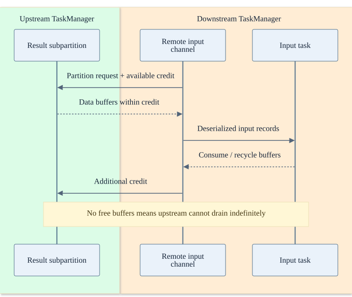

Chapter 07 · source-backed walkthrough
Flink: records, network credits and event time
The data path crosses three different boundaries: source I/O into the task, direct calls inside a chain, and buffered transfer between tasks. The mailbox orders task actions; network credits and availability propagate backpressure.
01
Mailbox and source thread handoff
An asynchronous fetcher may block in external I/O while the task thread stays responsible for operator callbacks and source progress mutation. A fetched-but-not-emitted record is not yet reflected in the emitted source offset. This distinction is essential for checkpoint correctness.
MailboxProcessor executes pending mail and the input default action. Timer callbacks, checkpoint triggers and completion notifications are ordered through the mailbox. A CPU-bound user function that does not return can delay all these actions. Asynchronous execution does not make a blocked task thread disappear.
I/O ownership differs from state ownership
The record emitter updates source progress in the task path after emission. Prefetched records can still be replayed.

02
Network credits and backpressure
The producer task serializes into result-subpartition buffers. A downstream remote input channel requests the partition and advertises buffer availability through credit-based shuffle control. The sender cannot send an unlimited amount into a consumer with no receive buffers.
When downstream CPU, disk, state access or sink I/O is slow, receive / output resources become unavailable. StreamTask.processInput suspends normal input work on availability futures. Pressure moves upstream until sources emit more slowly. Mailbox control work can still progress when the default input action is suspended.
Buffering absorbs bursts but does not fix a sustained capacity deficit. More buffers increase queueing delay and in-flight data to account for during recovery. Chaining has a different manifestation: a slow downstream operator directly holds the caller on the same task thread.
Remote shuffle credit cycle
This is the data transport between TaskManagers, separate from JobMaster task-control RPC.

03
Watermarks and event-time progress
Event-time progress is not wall-clock throughput. An operator with multiple active aligned inputs generally advances at the minimum input watermark. A silent input can delay window completion unless it is correctly marked idle. Reactivating it requires alignment with the current output watermark.
Watermarks tell event-time operators that earlier timestamps are unlikely under the source policy. They do not prove that every earlier event exists or that the source clock is correct. Allowed lateness, state cleanup and late-event handling belong to the operator semantics.
A lower out-of-orderness allowance can reduce result latency but sends more delayed records into late-data handling. A larger allowance retains more state and delays final results. This is independent of whether transport is exactly-once.
Two active inputs bound event time
For A=100 and B=80, the combined frontier is 80. Correctly marking B idle removes it from the active minimum.

Inside the implementation
These excerpts come directly from the code paths used above. Expand a component to move from the system view into its implementation.
flink-mailbox MailboxProcessor.java:214
Mail and input processing are serialized on the task thread.
flink/flink-runtime/src/main/java/org/apache/flink/streaming/runtime/tasks/mailbox/MailboxProcessor.java · 07805482705f
213 */
214 public void runMailboxLoop() throws Exception {
215 suspended = !mailboxLoopRunning;
216
217 final TaskMailbox localMailbox = mailbox;
218
219 checkState(
220 localMailbox.isMailboxThread(),
221 "Method must be executed by declared mailbox thread!");
222
223 assert localMailbox.getState() == TaskMailbox.State.OPEN : "Mailbox must be opened!";
224
225 final MailboxController mailboxController = new MailboxController(this);
226
227 while (isNextLoopPossible()) {fk-fetch KafkaPartitionSplitReader.java:157
The fetcher I/O thread owns the KafkaConsumer.
flink-connector-kafka/flink-connector-kafka/src/main/java/org/apache/flink/connector/kafka/source/reader/KafkaPartitionSplitReader.java · ae656dd6fe23
156 try {
157 consumerRecords = consumer.poll(pollTimeout);
158 } catch (WakeupException | IllegalStateException e) {
159 // IllegalStateException will be thrown if the consumer is not assigned any partitions.
160 // This happens if all assigned partitions are invalid or empty (starting offset >=
161 // stopping offset). We just mark empty partitions as finished and return an empty
162 // record container, and this consumer will be closed by SplitFetcherManager.
163 KafkaPartitionSplitRecords recordsBySplits =
164 new KafkaPartitionSplitRecords(
165 ConsumerRecords.empty(), kafkaSourceReaderMetrics);
166 markEmptySplitsAsFinished(recordsBySplits);
167 return recordsBySplits;
168 }
169 KafkaPartitionSplitRecords recordsBySplits =
170 new KafkaPartitionSplitRecords(consumerRecords, kafkaSourceReaderMetrics);fk-emit KafkaRecordEmitter.java:45
The emitted record advances checkpointable split state to offset+1.
flink-connector-kafka/flink-connector-kafka/src/main/java/org/apache/flink/connector/kafka/source/reader/KafkaRecordEmitter.java · ae656dd6fe23
44 @Override
45 public void emitRecord(
46 ConsumerRecord<byte[], byte[]> consumerRecord,
47 SourceOutput<T> output,
48 KafkaPartitionSplitState splitState)
49 throws Exception {
50 try {
51 sourceOutputWrapper.setSourceOutput(output);
52 sourceOutputWrapper.setTimestamp(consumerRecord.timestamp());
53 deserializationSchema.deserialize(consumerRecord, sourceOutputWrapper);
54 splitState.setCurrentOffset(consumerRecord.offset() + 1);
55 } catch (Exception e) {
56 throw new IOException("Failed to deserialize consumer record due to", e);
57 }
58 }flink-network CreditBasedPartitionRequestClientHandler.java:61
Remote input credits and partition requests use the shuffle data transport.
flink/flink-runtime/src/main/java/org/apache/flink/runtime/io/network/netty/CreditBasedPartitionRequestClientHandler.java · 07805482705f
60 */
61 class CreditBasedPartitionRequestClientHandler extends ChannelInboundHandlerAdapter
62 implements NetworkClientHandler {
63
64 private static final Logger LOG =
65 LoggerFactory.getLogger(CreditBasedPartitionRequestClientHandler.class);
66
67 /** Channels, which already requested partitions from the producers. */
68 private final ConcurrentMap<InputChannelID, RemoteInputChannel> inputChannels =
69 new ConcurrentHashMap<>();
70
71 /** Messages to be sent to the producers (credit announcement or resume consumption request). */
72 private final ArrayDeque<ClientOutboundMessage> clientOutboundMessages = new ArrayDeque<>();
73
74 private final AtomicReference<Throwable> channelError = new AtomicReference<>();flink-input StreamTask.java:678
Availability futures suspend and resume the input action.
flink/flink-runtime/src/main/java/org/apache/flink/streaming/runtime/tasks/StreamTask.java · 07805482705f
677 */
678 protected void processInput(MailboxDefaultAction.Controller controller) throws Exception {
679 DataInputStatus status = inputProcessor.processInput();
680 switch (status) {
681 case MORE_AVAILABLE:
682 if (taskIsAvailable()) {
683 return;
684 }
685 break;
686 case NOTHING_AVAILABLE:
687 break;
688 case END_OF_RECOVERY:
689 throw new IllegalStateException("We should not receive this event here.");
690 case STOPPED:
691 endData(StopMode.NO_DRAIN);flink-watermark StatusWatermarkValve.java:48
Aligned active channels bound output event time.
flink/flink-runtime/src/main/java/org/apache/flink/streaming/runtime/watermarkstatus/StatusWatermarkValve.java · 07805482705f
47 @Internal
48 public class StatusWatermarkValve {
49
50 // ------------------------------------------------------------------------
51 // Runtime state for watermark & watermark status output determination
52 // ------------------------------------------------------------------------
53
54 /**
55 * The current status of all subpartitions. Changes as watermarks & watermark statuses are fed
56 * into the valve.
57 */
58 private final List<Map<Integer, SubpartitionStatus>> subpartitionStatuses;
59
60 /**
61 * The index of the subpartition consumed by an input channel, if the channel consumes only oneTest source inspected or located, not executed: StatusWatermarkValveTest.java